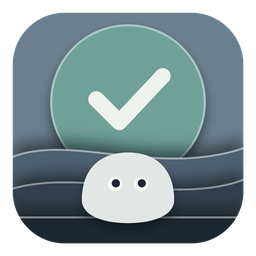

할 일 · 루틴 · 메모를 한 창에서. 되풀이되는 일은 한 번만 정해 두면 됩니다.
마감이 있는 일, 매달 돌아오는 일, 기한 없이 적어 두는 메모를 같은 자리에서 다룹니다. Windows 데스크톱 앱과 Android 앱이 있고, Google 계정으로 로그인하면 둘이 같아집니다.
Windows 앱 내려받기설치할 것 없이 압축을 풀고 실행하면 됩니다. Windows 10 · 11.
실제 앱 화면입니다. 동그라미를 눌러 완료해 보고(다 끝내면 밤이 옵니다), 하늘의 돌멩이를 잡아 옮겨 보세요. 체험판은 아무것도 저장하지 않습니다.
창 위쪽은 오늘 하루입니다. 궤도는 실제 해가 지나는 길이고, 구슬 하나가 일 하나입니다. 빛은 시각을 따라 바뀌고, 하늘에는 게으른 돌멩이 하나가 삽니다.
이 일을 하는 날 하루를 달력에서 고르고, 단위(일 · 주 · 월 · 년)와 간격(매달 · 분기 · 반기)을 고릅니다. 그러면 그 날에 실제로 돌아오는 규칙만 목록으로 나옵니다. 하나 고르면 끝입니다.
주말이나 공휴일에 걸리면 앞 영업일로 당길지 다음으로 미룰지 정할 수 있습니다. 한국 공휴일을 따릅니다.
완전히 끄려면 알림 영역 아이콘을 우클릭하고 "완전히 종료"를 누르세요. Windows 11은 새 아이콘을 숨겨 두기도 합니다 — 작업표시줄의 ^ 를 누르면 있습니다.
로그인하지 않아도 전부 동작합니다. 일정은 내 기기 안에만 있습니다.
Google 계정으로 로그인하면 PC와 휴대폰의 일정이 같아집니다. 처음 로그인할 때는 양쪽 것을 합치고, 어느 쪽도 지우지 않습니다. 각자의 일정은 각자의 계정에만 보입니다. 자세한 것은 개인정보처리방침에 적어 두었습니다.
%APPDATA%\LazyScheduler\data.json — 이 파일만 백업하면 됩니다.
새 버전으로 폴더를 덮어써도 일정과 설정은 그대로 남습니다.